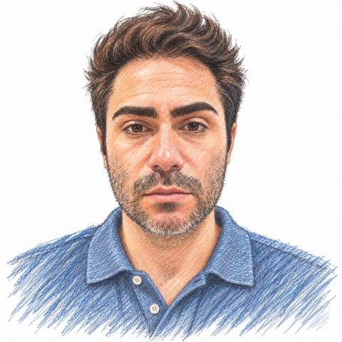
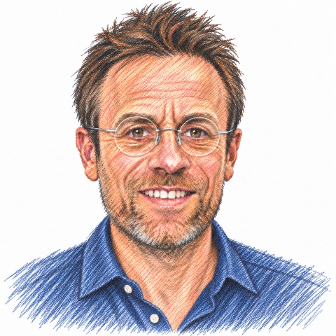
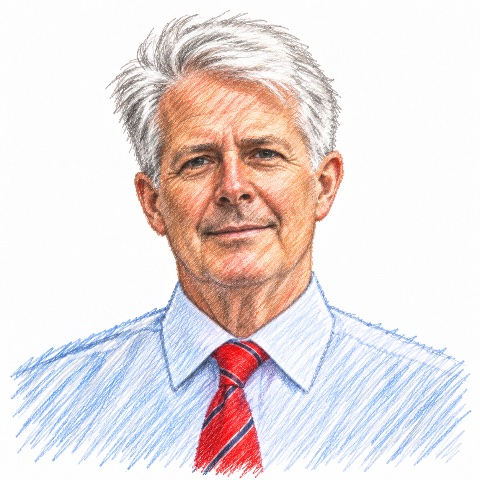

Multi-Parameter Optimisation
Our system optimises for drug likeness, ADMET/PK, target affinity, and selectivity together, and from the outset.
Our Process
Millions of existing compounds are tested against a biological target to find the few that bind. It works, but it is slow, expensive, and limited to chemistry that already exists.
Ad Atomica's platform designs molecules atom by atom specifically for a target rather than searching for compounds that already exist. Rapid, iterative optimisation loops generate hits and take them through to lead candidates at a fraction of the cost and time of traditional programmes.
Our closed loop system integrates computational design with experimental validation. Each cycle refines our models, improving predictive accuracy and the quality of the next round of design. We either partner with outsourced laboratories for rapid synthesis and testing, or our clients choose to do that in-house as part of our collaboration.
Our system optimises for drug likeness, ADMET/PK, target affinity, and selectivity together, and from the outset.
Unlike screening-based approaches, we build molecules from first principles, exploring vast chemical space to discover novel scaffolds that conventional methods would miss.
Every synthesis and assay result feeds back into our models, so each iteration improves our predictive power and the sophistication of the next design.
Ad Atomica's platform designs highly optimised candidates in weeks, dramatically reducing both discovery timelines and costs whilst maintaining rigorous scientific standards.
We run internal programmes on targets we select, progressing them towards preclinical development. Each one helps us advance the platform and better serve our clients and partners.
Ad Atomica works with biotech and pharma teams and with academic groups. In both collaborations, you provide the target and we build and execute the molecular design and optimisation programmes.
We run hit to lead and optimisation programmes end to end, taking your target through successive design cycles to a series ready for pre-clinical development.
We partner with academic groups to design and synthesise a first molecular series, testing a hypothesis in your field, then progress successful programmes together.
Our team combines entrepreneurial execution, deep technical expertise and scientific rigour. We have brought together expertise from AI, biotech, pharma and academia, and bring a pragmatic approach to the needs of our clients and partners.

Chief Executive Officer
Adam leads commercial strategy, partnerships and execution as CEO. He is a second time founder and created Ad Atomica after using large language models to interpret clinical signals during his father's illness.
Chief Research Officer
Alex builds the machine learning systems behind our platform. He holds a PhD in artificial intelligence and a master's in theoretical physics, combined with industry experience in AI consulting and full stack engineering.
Chief Technology Officer
Lygon leads the architecture and development of our technology platform infrastructure. He has eight years' full stack engineering experience, including two years automating bioinformatics pipelines for research scientists.

Chief Operating Officer
Jon runs internal operations and supports our client and investor work. He was part of the founding team at Ellipses Pharma, which grew from an idea into an international oncology drug development company.
Academic Transfer and Business Development
Vibha leads our academic and business development work. She cofounded Tavira Therapeutics and previously worked in technology transfer at the Institute of Cancer Research.
Our scientific advisors bring world class expertise in oncology, synthetic chemistry and drug development.

Lead Clinician
Emeritus Professor of Medical Oncology at Imperial College London, with around fifty thousand citations and decades in cancer therapeutics development. Patent holder for Samuraciclib, a CDK7 inhibitor now in Phase III trials.
Head of Chemistry
Professor of Organic Chemistry with around ten thousand citations and internationally recognised work on the design and scalable synthesis of bioactive molecules. Professor Opatz's early stage drug development expertise bridges the gap between in silico prediction and practical chemistry.
Advisor
More than twenty years of pharmaceutical leadership across GSK, Pfizer, Johnson and Johnson and Abbott, with experience taking programmes from IND onwards. An established chief executive and non-executive director in life sciences.
Contact
We welcome conversations with pharma, biotech, academic groups, and investors. Whether you have a target in mind or want to understand how we work, we would be glad to talk.
Start a conversation